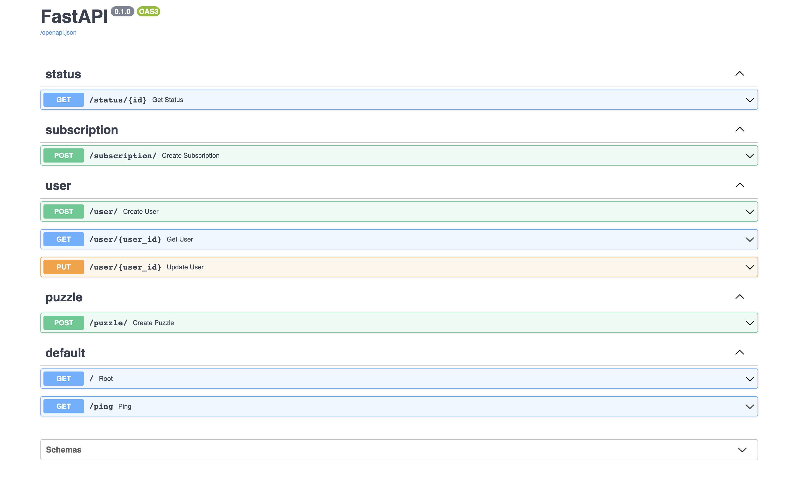

Puzzle Solver API¶
Docs: https://giraycoskun.github.io/puzzle-solver-api/
Architecture¶

Docker¶
DockerHub: https://hub.docker.com/repository/docker/giraycoskun/puzzle-solver
docker build -t puzzle-solver-api .
docker run -p 80:80 puzzle-solver-api
docker pull giraycoskun/puzzle-solver:latest
Local Development¶
git clone <>
poetry install
poetry export -f requirements.txt --output requirements.txt --with dev,docs
poetry shell
mkdocs serve
uvicorn src.main:app --reload --reload-dir src --port 8000
Services: RabbitMQ & Redis¶
docker run -it --rm --name rabbitmq -p 5672:5672 -p 15672:15672 rabbitmq:3.11.13-management
docker run -it --rm --name redis -p 6379:6379 redis:latest
Tasks¶
- [x] Create a REST API with FastAPI
- [ ] Apply Async in RabbitMQ Repository
- [ ] Initialize Subscription Service
- [ ] Initialize redis connection for solver service